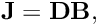
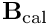
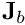
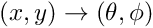
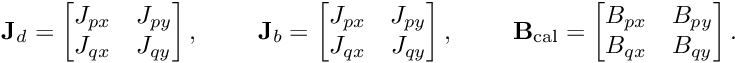
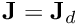
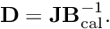

Table of Contents
Beamforming consists of three steps:
- Applying the calibration Jones matrices to the voltages measured at each tile,
- Shifting the signals from each tile in time to account for the signal delay from the look-direction to each tile, due to the geometric layout of the MWA tiles ("phasing up"),
- Summing the voltages from all the tiles together. These steps are described more fully in Ord et al., 2019, but are discussed further in the following subsections.
Applying the calibration solutions
In VCSBeam, the following bases are used:
![\[ \begin{aligned} {\bf v} &= {\bf J}{\bf e} \\ {\bf v} &= {\bf D} {\bf B}_\text{hb} {\bf P}_\text{pa} {\bf e} \\ \begin{bmatrix} v_q \\ v_p \end{bmatrix} &= \begin{bmatrix} D_{qq} & D_{qp} \\ D_{pq} & D_{pp} \end{bmatrix} \begin{bmatrix} B_{q\theta} & B_{q\phi} \\ B_{p\theta} & B_{p\phi} \end{bmatrix} \begin{bmatrix} P_{\theta x} & B_{\theta y} \\ B_{\phi x} & B_{\phi y} \end{bmatrix} \begin{bmatrix} e_x \\ e_y \end{bmatrix} \end{aligned} \]](form_50.png)
The  matrix, if obtained using Hyperdrive, is already in the correct basis, and can be used as is. However, if the RTS is used, the matrix must be permuted first. In memory, matrices are represented as an array of
matrix, if obtained using Hyperdrive, is already in the correct basis, and can be used as is. However, if the RTS is used, the matrix must be permuted first. In memory, matrices are represented as an array of cuDoubleComplexs (from the CUDA library), in the following order:

Therefore, the required permutation to get the matrix in the correct order is a "reversal" of the matrix elements in memory:
![\[ \begin{aligned} \begin{bmatrix} 1 & 2 \\ 3 & 4 \end{bmatrix} &\rightarrow \begin{bmatrix} 4 & 3 \\ 2 & 1 \end{bmatrix} \\ \begin{bmatrix} D_{pp} & D_{pq} \\ D_{qp} & D_{qq} \end{bmatrix} &\rightarrow \begin{bmatrix} D_{qq} & D_{qp} \\ D_{pq} & D_{pp} \end{bmatrix} \end{aligned} \]](form_52.png)
Currently, only Hyperbeam is used for the FEE beam model, and so the  is already given in the correct basis, .
Finally, the parallactic angle correction matrix is calculated by VCSBeam in the  basis, as desired.
Phasing up
If the channelisation is fine enough, and if the tile separations (baselines) are not too long, then a time shift can be accurately effected by applying a phase ramp across frequency.
Summing the voltages
If we use subscripts  and  to represent tiles (i.e. "_a_ntennas") and frequencies respectively, then the complete beamforming operation is
where  is the frequency-dependent phase difference between the arrival of a signal at a given tile relative to an arbitrary reference point, or "array phase centre".